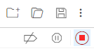
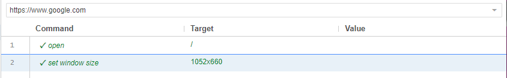
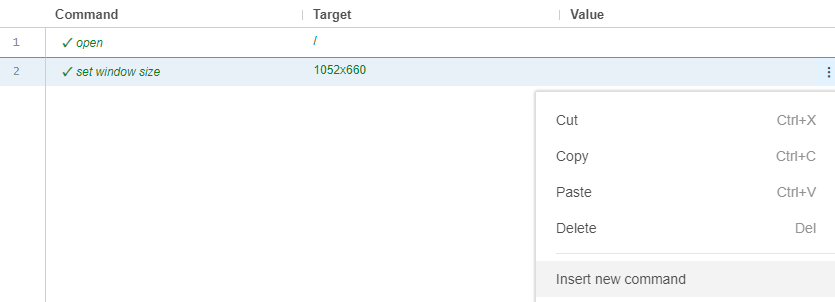
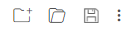

Features/Usage of Selenium IDE
Content
Selenium IDE is an extension for browsers Chrome, Firefox, and recently Microsoft Edge. Upon opening the extension, a new window opens prompting for what the user wants to do. The options are pretty straight forward: record a new test for a new project, open existing project, create new project, or just close the app.
Upon clicking Record a new test in a new project, the user is prompted to enter a project name. Here is where you enter the project name, and then upon clicking OK, it will ask you to enter a base url.
The base url is where Selenium IDE will record its scripts. Here is where you enter the website you want to be on. Upon clicking Start Recording, a new window opens with the page being that base URL you entered. On the bottom right of the opened webpage and in the Selenium IDE window, you can see that selenium is recording every single input.
When Selenium IDE is recording is when you would navigate through the webpage like a user would in order to test if something works as intended.
To stop the recording, go back to the top right of the Selenium IDE tab, and click the red square.

It will ask to provide a name for the new test, and here you can name it whatever. After setting the name, you will see your test on the left side of the page. Clicking RMB on the test allows you to either Rename, Duplicate, Delete, or Export the test.
In the body of the Selenium IDE window (under the base url) is where you would see columns Command, Target, and Value along with each step in order.

The Command is the action the user takes, the Target is the element/locator the command applies to, and Value is the input. Value may be empty since some commands do not require a value (for example clicking a button), but some commands such as typing may require a value.
To enter a new command, you can click the blank spot after the very last command and then rearrange it to the desired position by just holding LMB and moving cursor. Or you can click the three dots on the right side of the command and click the three dots, and then Insert new command.
 Running a test is basically just iterating through every step, and if a step could not pass/go through, then the test fails and stops. If all steps are completed, then the test passes. Above the base url are four buttons that have these functions: run all tests, run tests, step over current command, and test execution speed.
Run all tests: runs all the tests you made (under tab) and returns whether it passed or not.
Run test: runs the selected test and returns whether it passed or not.
Step over current command: is used to run the test (from a certain step).
Test execution speed: the speed of the testing process. If it iterates through pages too fast for you, lower it.
In order to create a new test, on the 'Tests' tab, click the '+' sign.

Here the process repeats. A new window with the same base url is opened and the recording begins.
The top right portion of the Selenium IDE window is used to create new projects, open projects, or save them. Selenium projects are saved as .side files, and if you were to open the .side file in Notepad, it would display the JSON file. This is extremely important for debugging.

And that is the jist of Selenium IDE. It is pretty straightforward. It is good to have a thorough understanding of locators, especially XPath and CSS.
Resources
Practice
Given practice from Max:
- I’ve attached my Selenium script. It’s the one that passes sometimes, and fails sometimes. I’d like you each to come prepared to discuss what we should do about this ‘intermittent failing’ test. Think as outside of the box as much as you want. There is no correct answer. Do we modify the test, modify the expectations, modify how we think about it…should it be passing and failing? what does this tell us about our system? Put on your tester hat and really think about it
- The script provided for the above exercise types in the search term of ‘cheese’ and clicks the ‘Google Search’ button. Can you modify it (or write your own) that instead of clicking the button to search, submits the search another way.
- The script provided for the first exercise looks for the dictionary definition on the search results for its assertion. I’d like you to create a test that instead verifies that one of the hyperlinks on the results page takes you to Wikipedia
- Lastly, I want you to be creative: find a website (can’t be google), and write a test case for it (like, give me a use case, and something we’d want to verify). This could be for something on your current project, something on a personal site/application, or just something random. Then, automate this test case. A few things to think about: Does your test case require one test, or multiple? What are you verifying, and why? Are there things you shouldn’t automate (why?)?
Sample Code
{
"id": "1f248ac2-aaa6-4119-9c63-89f3919023d0",
"version": "2.0",
"name": "Sample Selenium Tests",
"url": "https://www.google.com",
"tests": [{
"id": "8180eaf2-fe6c-4fbd-acaa-ada8be9e3143",
"name": "Cheese Search",
"commands": [{
"id": "b92af392-6234-494c-bdbc-8c3098ce4ac4",
"comment": "",
"command": "open",
"target": "/",
"targets": [],
"value": ""
}, {
"id": "99f31902-578b-4994-84f5-e3c1175e95f4",
"comment": "",
"command": "type",
"target": "name=q",
"targets": [
["id=APjFqb", "id"],
["name=q", "name"],
["css=#APjFqb", "css:finder"],
["xpath=//textarea[@id='APjFqb']", "xpath:attributes"],
["xpath=//textarea", "xpath:position"]
],
"value": "cheese"
}, {
"id": "b689798c-d956-4291-bb7d-a71ed2bb38f3",
"comment": "",
"command": "click",
"target": "css=input[name='btnK']:nth-child(1)",
"targets": [
["css=center:nth-child(1) > .gNO89b", "css:finder"],
["xpath=(//input[@name='btnK'])[2]", "xpath:attributes"],
["xpath=//div[4]/center/input", "xpath:position"]
],
"value": ""
}, {
"id": "7f05080a-b309-4fd3-94f6-54f6c27082ba",
"comment": "",
"command": "assertText",
"target": "css=span[data-dobid=\"hdw\"]",
"targets": [
["css=div:nth-child(3) > .VpH2eb .MiCl6d span", "css:finder"],
["xpath=//div[@id='tsuid_43']/span/div/div/div[3]/div/div/div[2]/div/div/span", "xpath:idRelative"],
["xpath=//div[3]/div/div/div[2]/div/div/span", "xpath:position"]
],
"value": "cheese"
}]
}],
"suites": [{
"id": "a21259f0-c4b2-474f-8c97-c80371a63555",
"name": "Default Suite",
"persistSession": false,
"parallel": false,
"timeout": 300,
"tests": ["8180eaf2-fe6c-4fbd-acaa-ada8be9e3143"]
}],
"urls": ["https://www.google.com/"],
"plugins": []
}